Do vídeo original ao corte vertical pronto, e de uma ideia a uma série de 20 episódios feita com IA — sempre com a trava de direitos autorais ligada e a sua aprovação em cada etapa.
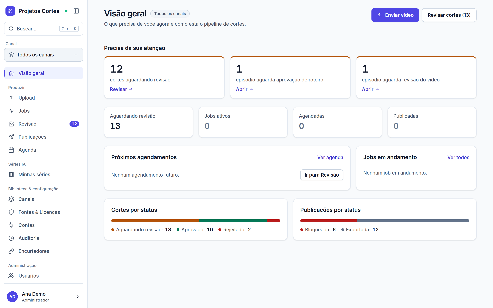
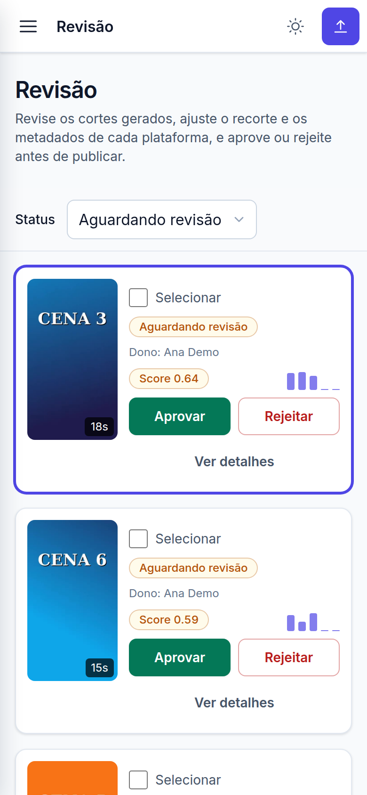
Navegação
Encontre a tela ou o assunto que você procura. Os números levam às páginas deste manual.
Apresentação
O Projetos Cortes ajuda você a criar vídeos verticais (Shorts, Reels, TikTok) a partir de material que você tem o direito de usar — próprio, licenciado, de domínio público ou Creative Commons — e a criar séries de histórias com inteligência artificial. Você decide tudo; a plataforma organiza o trabalho.
Envie um vídeo, deixe o sistema sugerir os melhores momentos, revise e prepare a publicação.
Descreva uma ideia; a IA planeja 20 episódios de cerca de 30 segundos. Você aprova o roteiro e o vídeo de cada episódio.
Usuários, cotas de uso, “ver como” outro usuário, auditoria e preferências da sua conta.
Funciona por baixo de tudo: nenhum corte entra na fila de publicação sem licença válida registrada.
Plataformas de destino: YouTube Shorts, TikTok, Instagram Reels, Facebook Reels, Vimeo e Bilibili (esta última só por exportação manual). Hoje a publicação acontece por exportação de pacote (arquivo zip com o vídeo e os textos); a publicação automática nas plataformas depende de conectar as contas, o que ainda está em desenvolvimento.
As telas deste manual são de um ambiente de demonstração, com dados fictícios: nomes, canais, vídeos sintéticos gerados só para exemplo e provedores de IA de teste. Os valores e textos que você verá no seu painel serão diferentes.
Apresentação
Cada tela do painel aparece em uma imagem real, com marcações numeradas. Os números da imagem correspondem à legenda logo abaixo dela.
Explica a razão de uma regra ou de um comportamento — útil para entender o que parece estranho, como um bloqueio ou um limite.
Descreve, passo a passo, o que o sistema faz por trás da tela ou como usar um recurso do jeito certo.
Chama atenção para algo que pode causar problema: direitos autorais, limites de uso, funções ainda indisponíveis.
Apresentação
A plataforma tem dois perfis. O administrador cuida da casa; cada usuário trabalha nos próprios canais e vídeos.
| Perfil | O que faz | Onde atua |
|---|---|---|
| ADMIN Dono da plataforma |
|
Usuários · Contas (Configurar chaves) · Ver como · Auditoria |
| USUÁRIO Criador de conteúdo |
|
Visão geral · Upload · Jobs · Revisão · Publicações · Agenda · Séries IA · Canais · Fontes · Contas · Minha conta |
A IA propõe: sugere cortes, escreve títulos, planeja e roteiriza séries, gera imagens, vozes e vídeo. Quem decide é você: nada vai para a fila de publicação sem a sua aprovação e sem passar pela trava de direitos.
Se você não vê o item Usuários no menu lateral, seu perfil é de usuário comum. Para pedir mais cota, redefinir a senha ou cadastrar uma chave de integração, fale com o administrador.
Do vídeo enviado ao corte aprovado e pronto para publicar, passando pela trava de direitos.
A1 · ENTRAR
O acesso é por usuário e senha, criados pelo administrador. Não existe cadastro aberto.
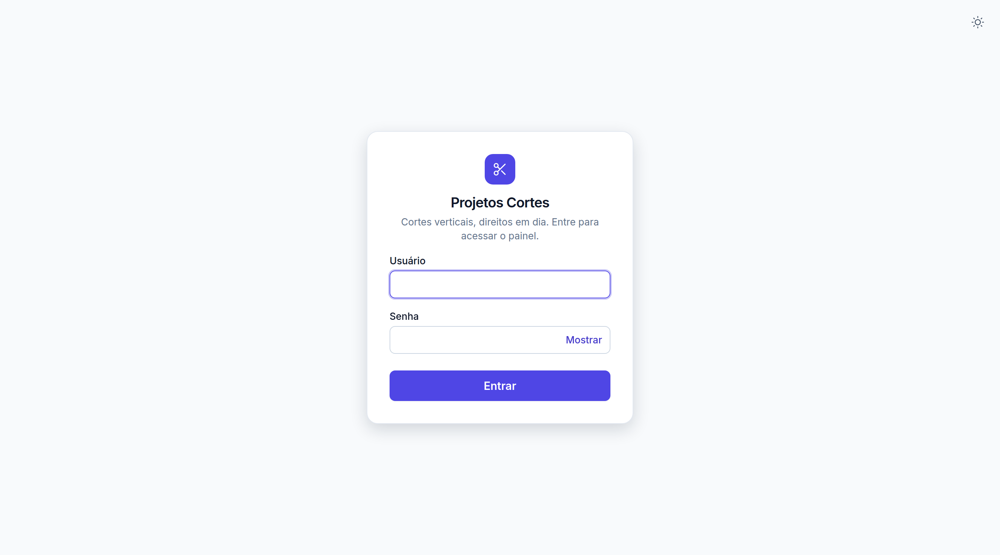
Por segurança, após 5 tentativas erradas em 15 minutos (para o mesmo usuário, a partir do mesmo computador) o acesso é bloqueado por um tempo. A mensagem de erro é genérica de propósito: ela não diz se o usuário existe.
Não há botão “Esqueci minha senha”. Se perder a senha, peça ao administrador para redefinir: ele define uma senha provisória e você troca no próximo acesso.
Clicando no seu nome, no canto inferior esquerdo, abre-se o menu com Minha conta, o seletor Ver como (somente admin), a troca de tema claro/escuro e Sair. Veja a Parte C.
A2 · VISÃO GERAL
A primeira tela mostra o que está esperando a sua decisão e como está o funil de cortes.
A tela se atualiza sozinha enquanto há análises rodando. O botão ao lado do logotipo recolhe o menu lateral (veja C5), e Ctrl + K abre a busca de telas.
A3 · CANAIS
Um canal reúne contas de publicação, o preset padrão de análise e o modelo de texto de um nicho (por exemplo, “Ação em 60s”).
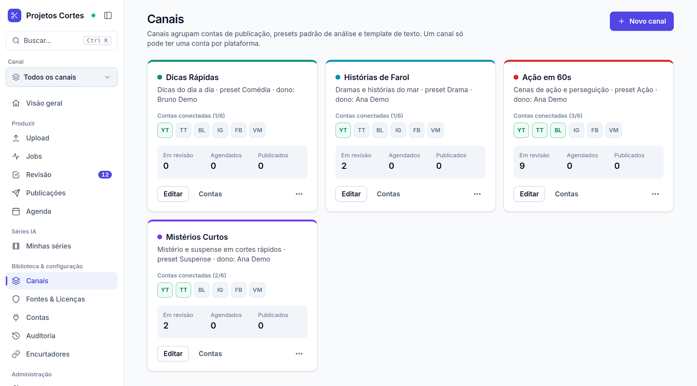
Canais separam nichos diferentes sob o mesmo login. Cada um guarda seus próprios padrões, e você pode filtrar qualquer tela por canal com o seletor da barra lateral.
Você só pode ter um número limitado de canais (padrão: 4 para usuários comuns; o administrador define a cota). Excluir um canal é bloqueado enquanto houver publicações agendadas nele.
A3 · CANAIS
O formulário define a identidade do canal e os padrões que serão usados nas análises e nos textos.
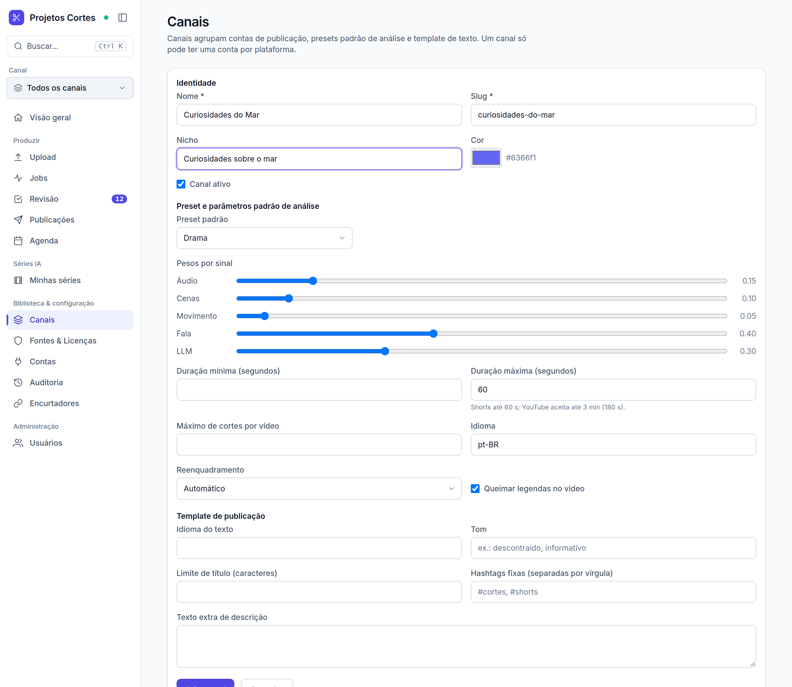
A4 · FONTES & LICENÇAS
Toda mídia precisa estar ligada a uma Fonte: o registro que diz de onde veio o vídeo e com que licença você pode usá-lo.
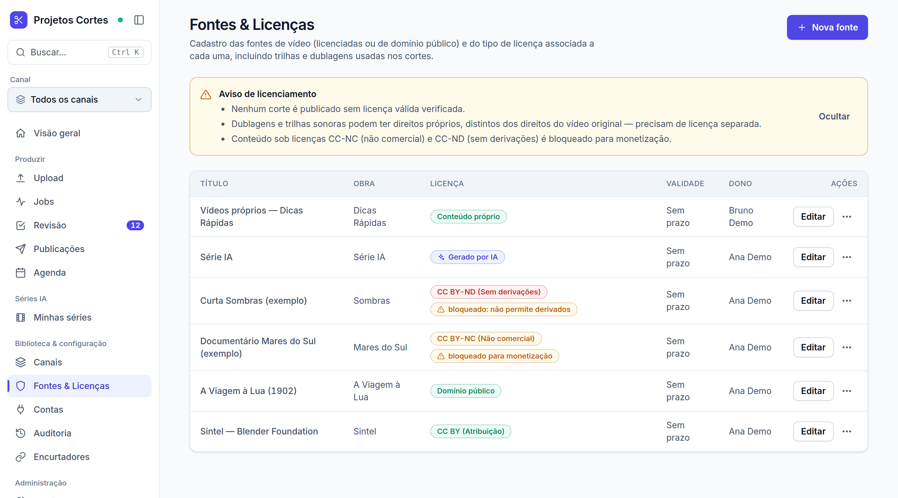
Um corte é uma obra derivada do vídeo original. Por isso licenças que proíbem derivações (ND) nunca liberam publicação, e licenças não comerciais (NC) não liberam contas que monetizam.
Cada série de IA cria sozinha uma fonte “Gerado por IA” (você a vê na lista como Série IA). Ela não pode ser excluída nem ter a licença alterada enquanto a série existir.
A4 · FONTES & LICENÇAS
Preencha com o que a página de origem do vídeo declara. Quanto mais completo, menos bloqueios surpresa na hora de publicar.
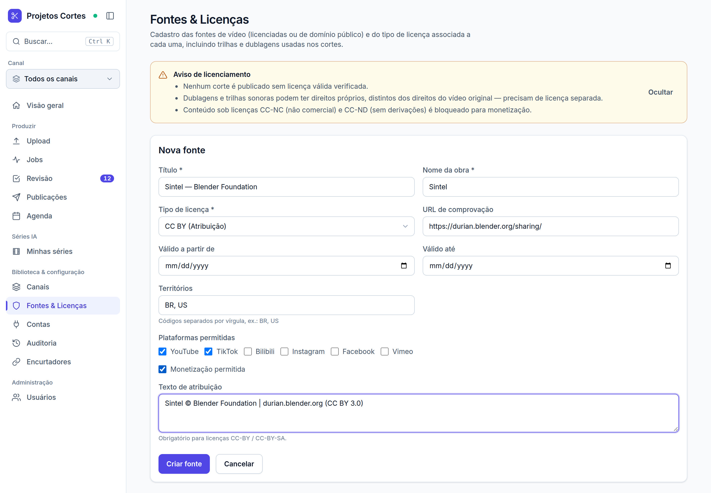
A4 · FONTES & LICENÇAS
Antes de enviar qualquer vídeo, confirme que você pode cortá-lo e republicá-lo. Este guia não substitui orientação jurídica.
Regra de ouro: vídeo sem licença declarada é vídeo com todos os direitos reservados. Estar online, ser “público” ou ter pouca duração não dá permissão. Não existe “duração segura”: cortar 5, 10 ou 30 segundos sem licença não torna o uso legal.
Abra o vídeo, expanda a descrição (…mais) e procure a linha Licença. “Licença padrão do YouTube” significa todos os direitos reservados. “Creative Commons — Atribuição” (CC BY) permite reutilizar com crédito. Só o autor original pode marcar essa licença.
Na página do item, procure o campo de licença (por exemplo, “Public Domain” ou uma licença Creative Commons). Se a licença não estiver especificada, isso não é permissão.
Um vídeo marcado como livre em um canal que apenas copiou o original não prova nada. Volte à fonte original e confira ali a licença e o autor.
Pela Lei 9.610/1998, art. 44, a proteção das obras audiovisuais dura 70 anos, contados de 1º de janeiro do ano seguinte ao da divulgação. Passado esse prazo, a obra está em domínio público.
Em regra, obras publicadas há mais de 95 anos (em 2026, as publicadas até 1930). Confira a data de publicação da obra, não a do arquivo digital.
A obra pode ser livre, mas uma restauração, uma trilha sonora ou uma dublagem específica pode ter direitos próprios e exigir licença separada.
A5 · UPLOAD
Envie o vídeo-fonte (e legendas) que servirá de base para os cortes verticais. O envio só começa depois que você escolhe uma fonte.
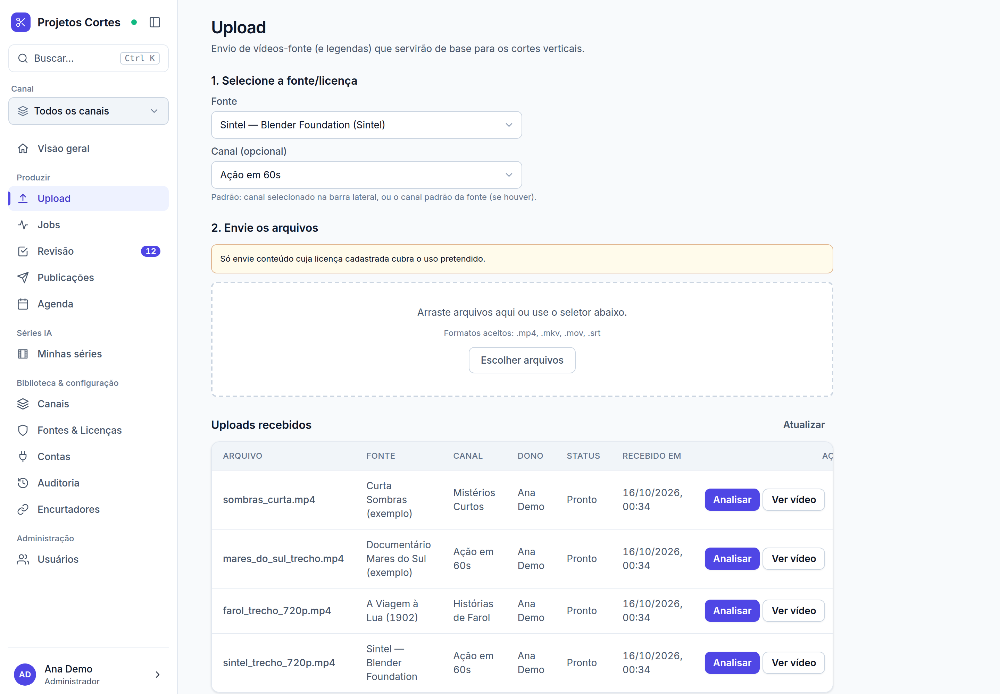
O envio é retomável: o arquivo sobe em partes de 50 MB. Se a conexão cair, ele tenta de novo sozinho (até 5 tentativas) e continua de onde parou.
Sem fonte não há envio. Assim, nenhum vídeo existe na plataforma sem uma licença registrada.
Há uma cota de armazenamento (padrão 50 GB por usuário; admin ilimitado). Acima dela, o envio é recusado.
A6 · ANALISAR
A análise procura os trechos mais intensos do vídeo e propõe cortes verticais de 1080×1920.
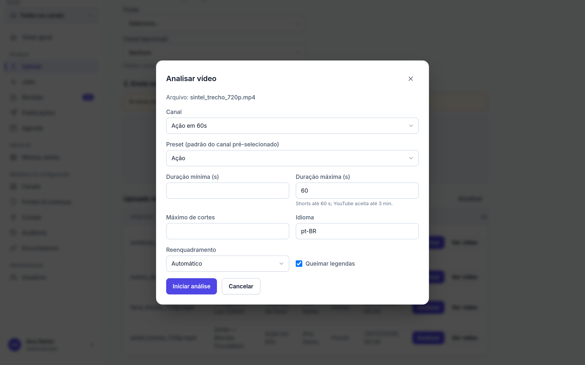
| Preset | Áudio | Cenas | Mov. | Fala | IA |
|---|---|---|---|---|---|
| Ação | 0,30 | 0,25 | 0,35 | 0,05 | 0,05 |
| Drama | 0,15 | 0,10 | 0,05 | 0,40 | 0,30 |
| Comédia | 0,20 | 0,15 | 0,15 | 0,30 | 0,20 |
| Suspense | 0,25 | 0,20 | 0,20 | 0,20 | 0,15 |
| Personalizado | você define os pesos | ||||
O sistema mede cinco sinais em cada trecho — áudio, cortes de cena, movimento, fala e (se houver chave) refinamento por IA — e soma com os pesos do preset. Depois escolhe até N trechos sem sobreposição, dentro da duração pedida.
Cada gênero pede um olhar diferente: ação valoriza movimento; drama valoriza fala e emoção.
Existe um limite de análises por dia (padrão 10 para usuários comuns; o administrador não tem limite). A contagem usa o horário de Brasília.
A7 · JOBS
Cada análise iniciada vira um job. Aqui você vê a fila e o andamento de cada um.
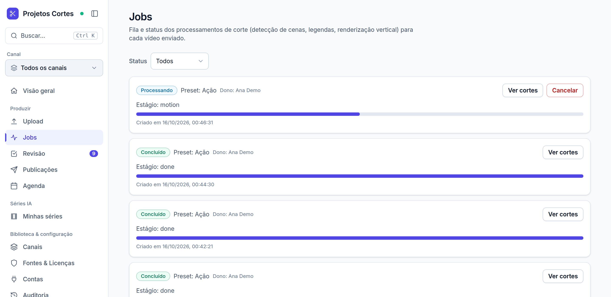
Estados de um job: Na fila Processando → Concluído. Também pode terminar como Falhou ou Cancelado. Enquanto está na fila ou processando há um botão Cancelar.
Gerar cortes envolve transcrever a fala, detectar cenas e renderizar vídeo, o que leva tempo. O job roda em segundo plano para você continuar usando o painel.
A8 · REVISÃO
Os cortes sugeridos chegam aqui. Veja cada um, ajuste se quiser e decida. Nada segue para publicação sem a sua aprovação.
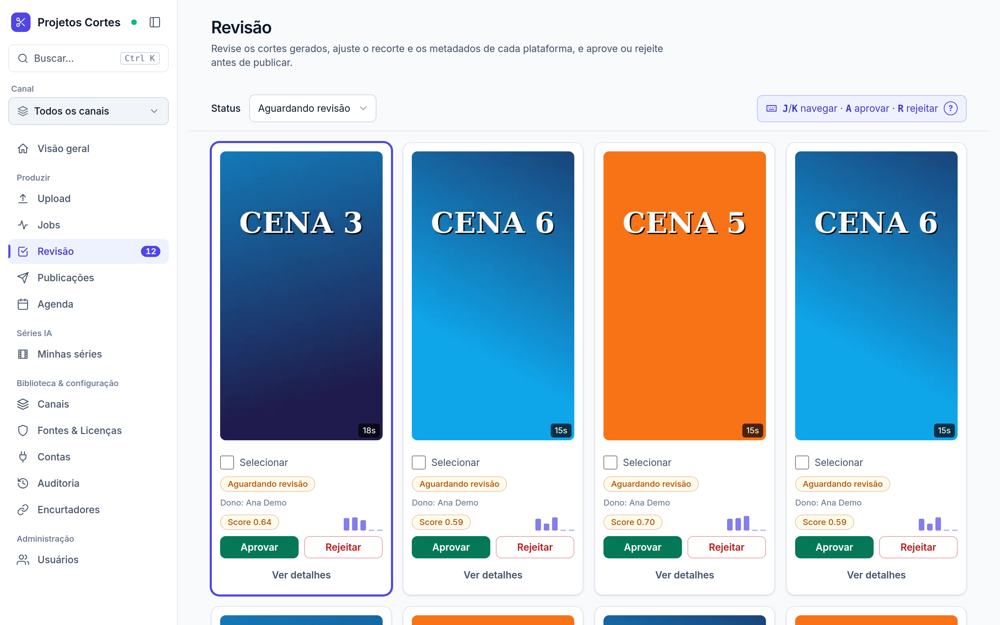
| Tecla | Ação |
|---|---|
| J | Próximo corte |
| K | Corte anterior |
| A | Aprovar o corte em foco (com Desfazer) |
| R | Rejeitar o corte em foco (com Desfazer) |
| Ctrl K | Buscar tela |
Desfazer: ao aprovar ou rejeitar aparece um aviso por alguns segundos. A decisão só é enviada ao sistema depois de cerca de 6 segundos; clique em Desfazer dentro desse prazo para voltar atrás.
Cortes de episódios de série (selos “Série · Ep.” e “IA”) também aparecem aqui. Aprovar ou rejeitar executa a ação no episódio e o recorte não pode ser ajustado.
A8 · REVISÃO
Marque vários cortes para decidir de uma vez. Abra um corte para ajustar texto por plataforma e o recorte.
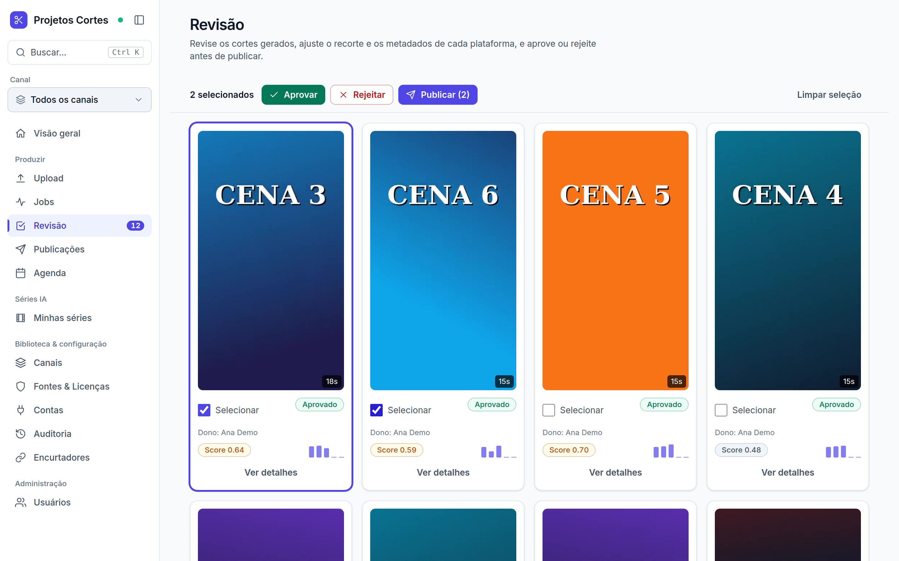
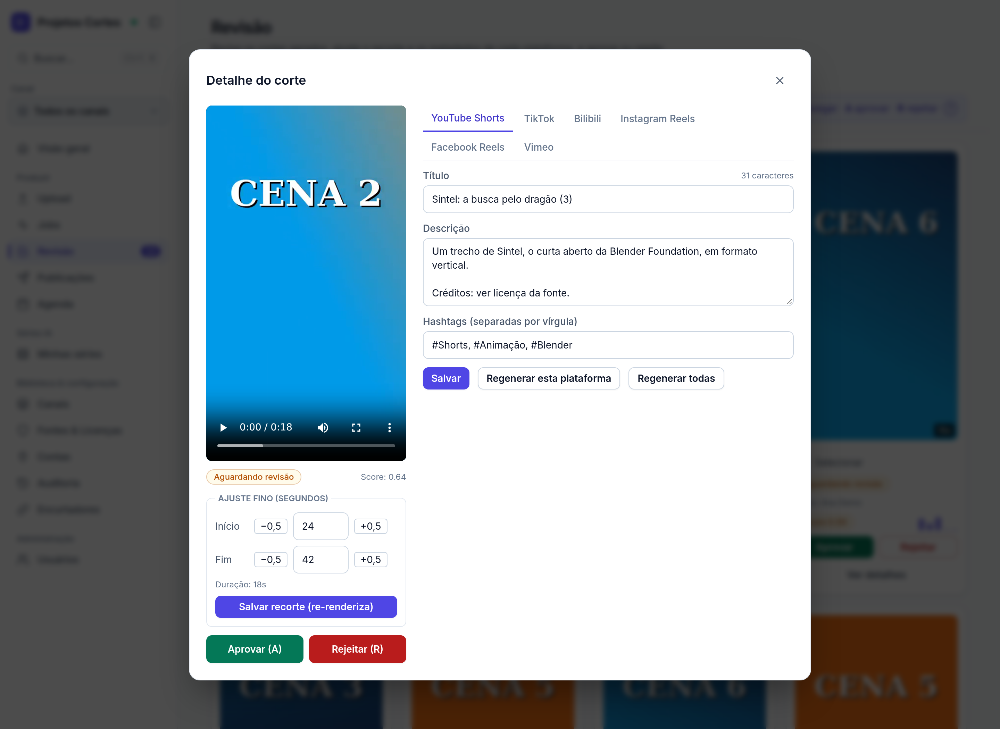
Sem chave de IA configurada, os títulos e hashtags são simples e automáticos. Revise e melhore antes de aprovar.
Para ajustar o recorte, mude início e fim e clique em Salvar recorte. O corte volta a “Renderizando” e depois reaparece para revisão.
A9 · PUBLICAR
Depois de aprovar, selecione os cortes e clique em Publicar. A trava de direitos confere cada combinação de corte e conta antes de qualquer coisa.
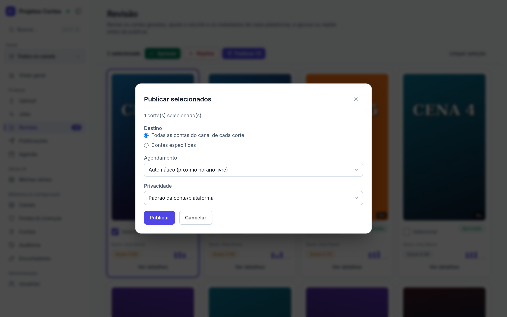
| Motivo mostrado | Quando acontece |
|---|---|
| Fonte sem licença cadastrada | O vídeo não tem fonte vinculada ou a fonte está sem tipo de licença. |
| Fora da janela de validade | A data de hoje está antes do início ou depois do fim da validade da licença. |
| Plataforma não permitida | A plataforma da conta não está entre as permitidas na fonte. |
| CC BY-NC não permite monetização | A licença é CC BY-NC e a conta está marcada como monetizada. |
| CC BY-ND não permite derivados | A licença é CC BY-ND: cortes são obra derivada e são sempre bloqueados. |
| Licença não permite monetização | A fonte não marca “Monetização permitida” e a conta é monetizada. |
Existe uma única regra para essa decisão, aplicada a cada par corte × conta. Ela não depende de quem publica nem de onde: é o que impede que um vídeo sem direito chegue a uma plataforma.
Conta manual: o resultado é Exportada (pacote para você enviar). Conta conectada: ficaria Agendada no próximo horário livre, respeitando as janelas e o limite diário da conta — a conexão automática ainda não está disponível (veja A12).
A10 · PUBLICAÇÕES
Cada tentativa de publicar vira uma linha aqui, com o motivo quando é bloqueada e o pacote para baixar quando é exportada.
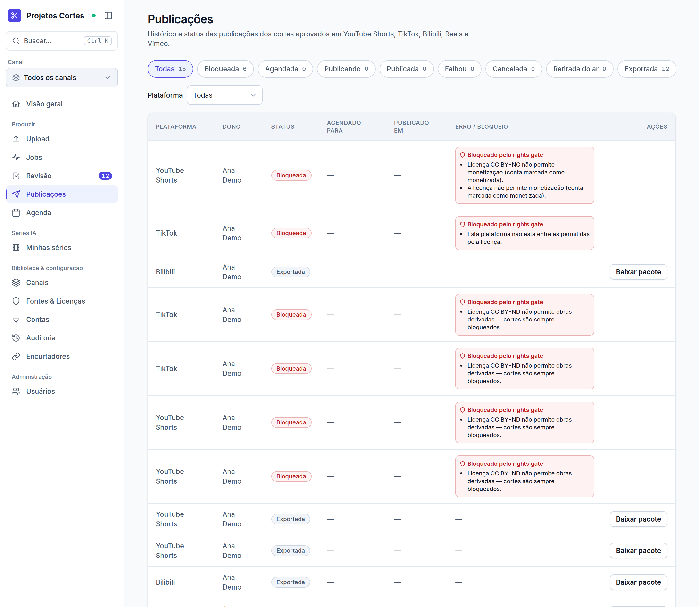
Bloqueada não é falha do sistema: é a trava funcionando. Para liberar, é preciso corrigir a causa — por exemplo, a licença registrada na Fonte. Se a licença realmente não permite o uso, o corte não pode ser publicado.
A descrição dentro do pacote sempre recebe o texto de atribuição da fonte. Envie o vídeo e o texto pelo aplicativo ou site da plataforma.
A11 · AGENDA
Calendário semanal das publicações agendadas e já publicadas, coloridas pelo canal de origem.
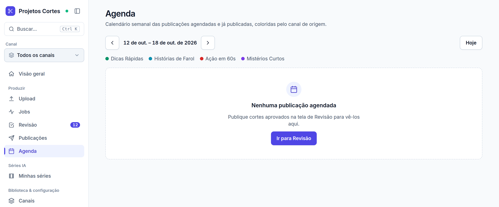
Contas conectadas têm janelas de postagem (dias e horários) e um limite diário. No modo automático o sistema escolhe o próximo horário livre que respeita as duas regras.
Hoje só existem contas manuais, cujo resultado é um pacote exportado — por isso a Agenda aparece vazia. Ela começará a mostrar publicações quando a conexão automática com as plataformas (OAuth) estiver disponível. A agenda das séries é outra: fica dentro de cada série (B6).
A12 · CONTAS
Aqui ficam as plataformas de destino e as chaves de IA. As contas “manuais” geram pacotes de exportação.
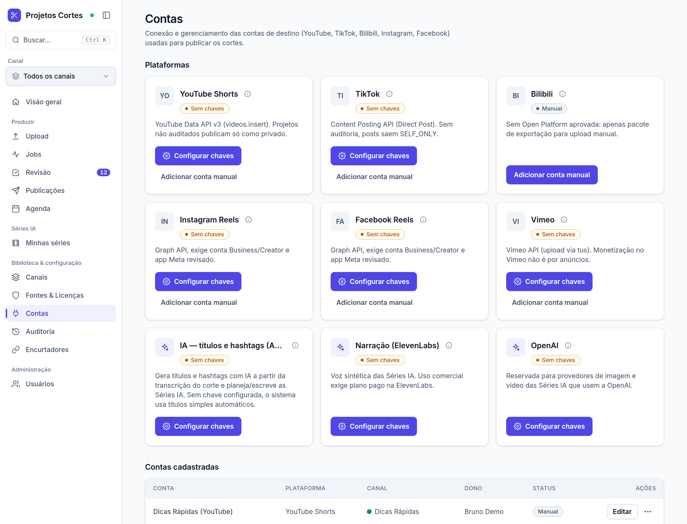
A12 · CONTAS
O administrador cadastra as chaves de cada serviço pela própria tela, sem reiniciar nada. O valor salvo aqui tem prioridade sobre o configurado no servidor.
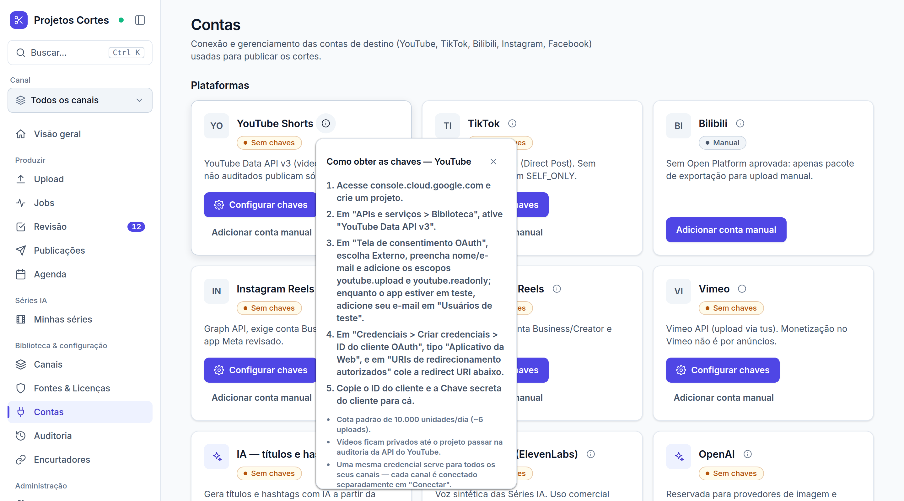
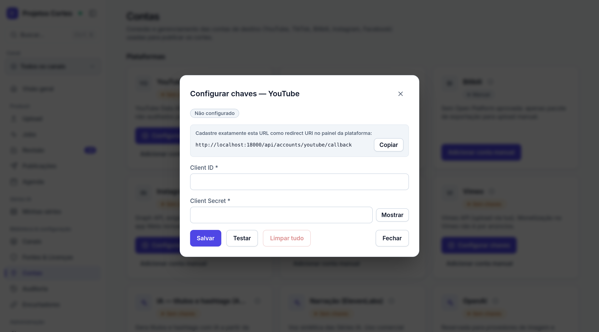
As chaves são guardadas cifradas e a tela mostra apenas os quatro últimos caracteres. Nem o administrador consegue ler uma chave completa depois de salva.
Conectar (OAuth) ainda não está disponível. Depois de salvar as chaves, o botão “Conectar” aparece no cartão, mas a ligação automática com a conta da plataforma não está concluída nesta versão. A publicação automática continua pendente: use contas manuais e o pacote exportado.
Uma ideia vira uma temporada de 20 episódios de cerca de 30 segundos. A IA propõe; você aprova o roteiro e o vídeo de cada um.
B1 · SÉRIES IA
Histórias em 20 episódios de 30 segundos, geradas por IA, em vídeo vertical e em português. Você aprova o roteiro e o vídeo de cada episódio.
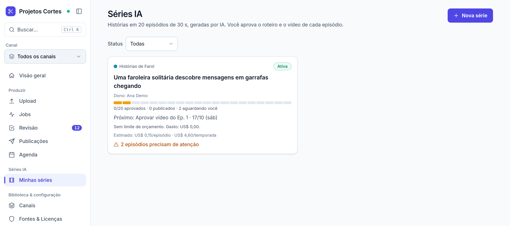
Dois “portões” humanos: aprovar o roteiro libera o gasto com imagens, vídeo e voz; aprovar o vídeo libera a publicação. Assim você controla o custo e o que vai ao ar.
Cada usuário comum pode ter 1 série ativa por vez (padrão; o administrador pode mudar). Os episódios de série entram na Revisão como cortes marcados “Conteúdo gerado por IA”.
B2 · NOVA SÉRIE · PASSO 1
O assistente tem 5 passos. No primeiro você descreve a ideia, o gênero, o tom e o canal.
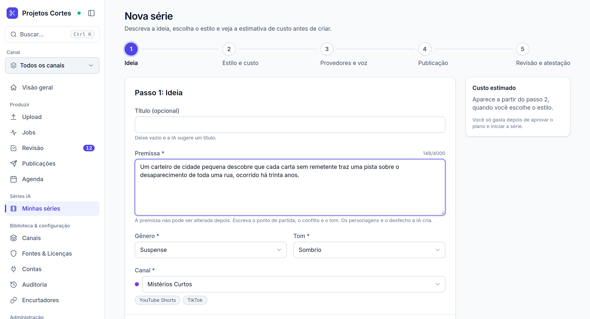
A premissa é imutável para que a história não “fuja” da ideia original. A IA trata o texto como dado, não como instrução, e recusa premissas que copiem obras protegidas ou retratem pessoas reais.
Se o canal escolhido não tiver nenhuma conta, você pode criar a série, mas só poderá iniciá-la depois de cadastrar uma conta (manual ou conectada) nesse canal.
B2 · NOVA SÉRIE · PASSO 2
O passo mais importante: a estratégia visual define quanto cada episódio custa.
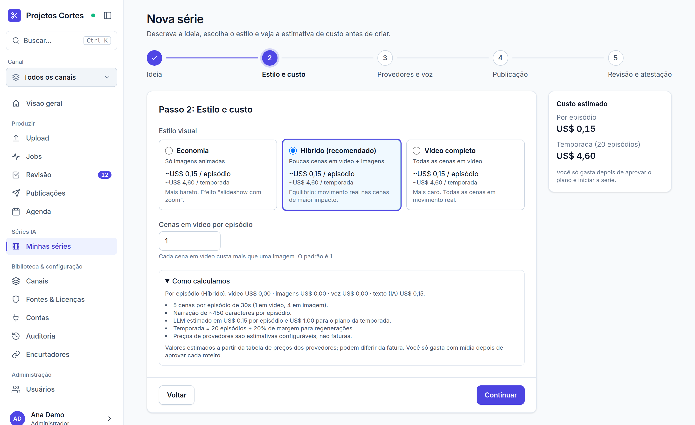
A estimativa assume: 5 cenas por episódio de 30 s; narração de cerca de 450 caracteres; IA de texto em torno de US$ 0,15 por episódio mais US$ 1,00 pelo plano da temporada; e 20% de margem para regenerações. Os preços dos provedores são estimativas configuráveis, não faturas.
Nesta demonstração os três estilos mostram o mesmo valor porque os provedores de teste não têm custo. Com provedores reais, Híbrido e Vídeo completo custam mais que Economia. Você só gasta com mídia depois de aprovar cada roteiro.
B2 · NOVA SÉRIE · PASSO 3
Escolha quem gera a imagem, o vídeo e a narração. Provedores de teste permitem experimentar tudo sem chaves e sem custo.
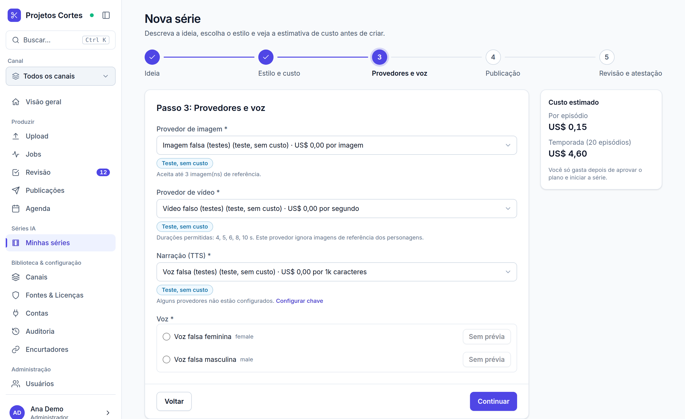
Modo de teste: quando o servidor está com os provedores de teste ligados, aparecem opções como “Imagem falsa (testes)”, “Vídeo falso (testes)” e “Voz falsa (testes)”, e a IA de texto também é simulada. A história, o fluxo de aprovação e a montagem do vídeo funcionam de verdade, mas o conteúdo é genérico e o custo é zero.
Provedores sem chave aparecem desabilitados (“não configurado”). Para usar um provedor real, o administrador cadastra a chave em Contas. O texto do roteiro dos testes é padronizado: serve para aprender o fluxo, não para publicar.
B2 · NOVA SÉRIE · PASSO 4
Defina quando os episódios vão ao ar, como serão preparados e quanto você aceita gastar.
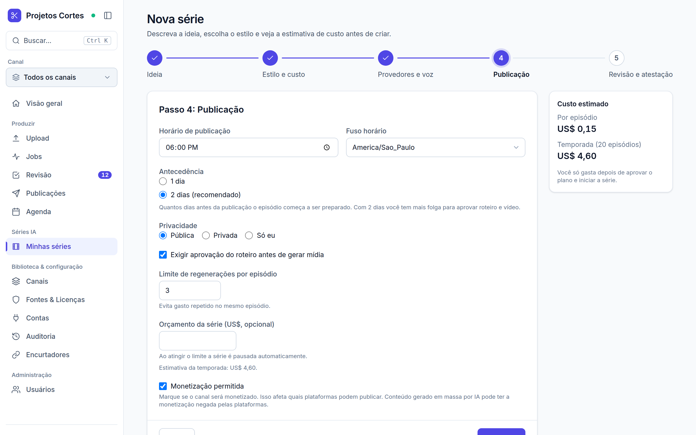
Com 2 dias de antecedência você tem mais folga para aprovar roteiro e vídeo antes da hora marcada.
Conteúdo gerado em massa por IA pode ter a monetização negada pelas plataformas. Desligar a aprovação do roteiro faz a IA gastar com mídia assim que o roteiro estiver pronto.
B2 · NOVA SÉRIE · PASSO 5
Confira o resumo e confirme a declaração de originalidade. Sem ela a série não é criada.
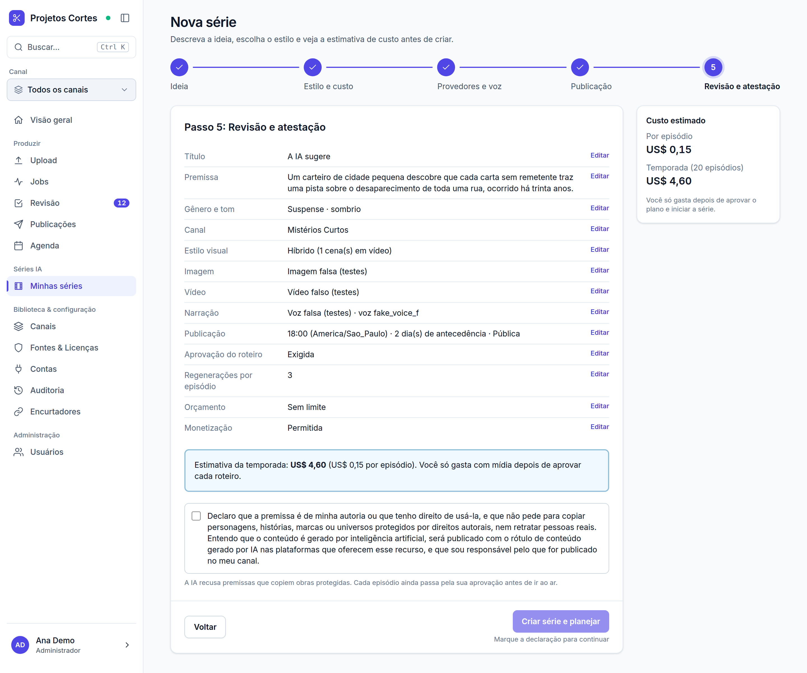
“Declaro que a premissa é de minha autoria ou que tenho direito de usá-la, e que não pede para copiar personagens, histórias, marcas ou universos protegidos por direitos autorais, nem retratar pessoas reais. Entendo que o conteúdo é gerado por inteligência artificial, será publicado com o rótulo de conteúdo gerado por IA nas plataformas que oferecem esse recurso, e que sou responsável pelo que for publicado no meu canal.”
Os episódios são marcados internamente como conteúdo sintético (selo “Conteúdo gerado por IA” na Revisão). O envio desse rótulo às plataformas acontecerá na publicação automática, que ainda não está disponível.
B3 · TELA DA SÉRIE
Depois de criada, a IA planeja a temporada (leva alguns minutos). Quando o plano fica pronto, você revisa e inicia a série.
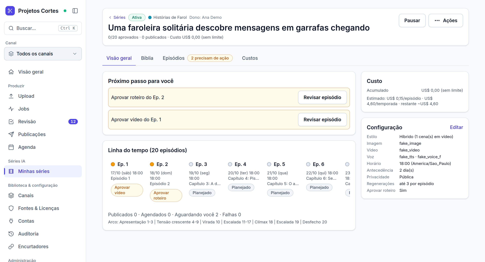
Antes de ativar: a série passa por “Planejando…”, depois “Plano pronto”. Nesse ponto você pode editar a bíblia e as sinopses, e então usar Iniciar série (escolhendo a data do primeiro episódio).
Agenda empurrada: se o horário de um episódio passar sem aprovação, ele e os seguintes avançam 1 dia (ou mais, conforme o atraso). Nada é publicado sem a sua aprovação e nenhum episódio é pulado.
B4 · BÍBLIA
A bíblia é o “manual do mundo” da história: cenário, estilo, personagens e arco da temporada. A IA a consulta em todos os episódios.
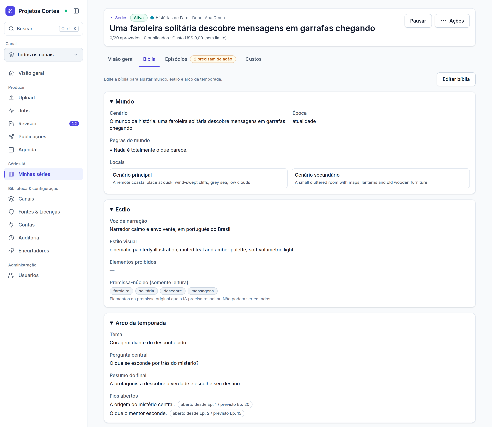
Salvar a bíblia marca como Desatualizados os episódios cujo roteiro estava pronto ou aguardando aprovação: eles serão reescritos. O aviso mostra quantos serão afetados antes de você confirmar.
B4 · BÍBLIA
A IA pode criar, ferir e até “matar” personagens ao longo dos episódios, mas isso só vale depois que você aprova o vídeo.
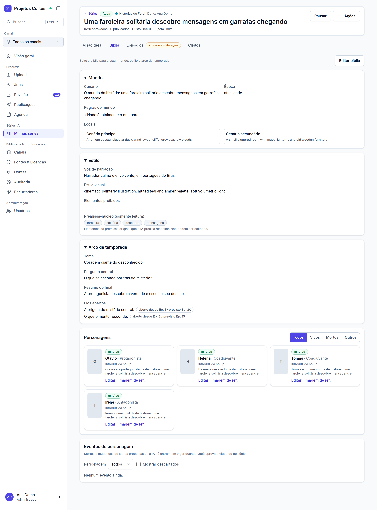
| Status | Significado |
|---|---|
| Vivo | Em cena normalmente. |
| Ferido | Em cena, com a condição registrada. |
| Desaparecido | Fora de cena por enquanto. |
| Transformado | Mudou de forma ou de papel na história. |
| Morto | Só reaparece em flashback. |
Mortes e mudanças de status propostas pela IA só entram em vigor quando você aprova o vídeo do episódio. Se você desaprovar depois, os eventos voltam a “propostos”.
O status do personagem não é editado à mão. A imagem de referência (PNG, JPEG ou WebP, até 5 MB) deve ser algo que você tenha direito de usar — não envie fotos de pessoas reais sem autorização.
B5 · EPISÓDIOS
Veja os 20 episódios em grade ou lista e filtre os que precisam de ação.
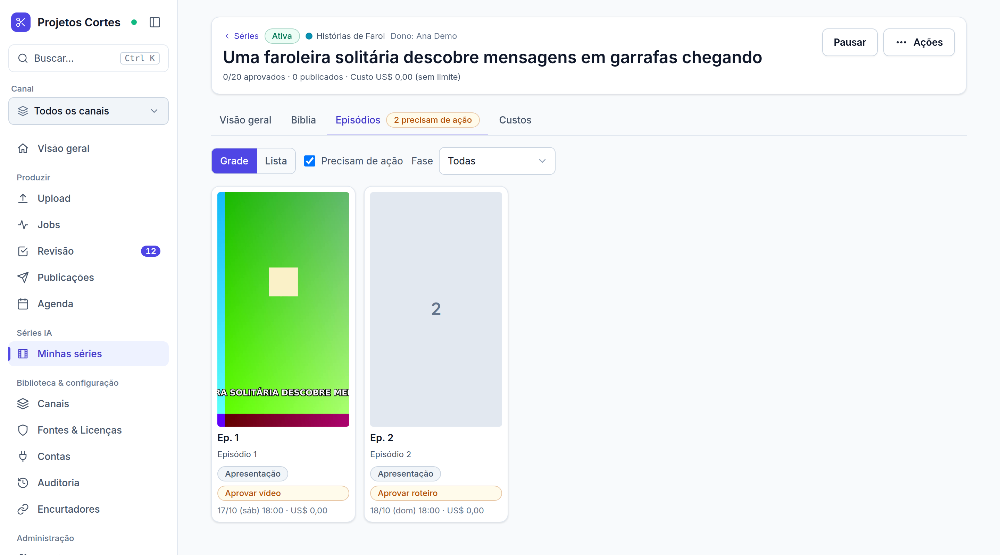
Fases do arco: Apresentação (eps. 1–3), Tensão crescente, Virada (por volta do 10–11), Escalada, Clímax (18–19) e Desfecho (ep. 20).
A aprovação é sequencial: o episódio N só pode ser aprovado depois do N−1. Assim a continuidade da história é preservada.
B5 · CUSTOS
Acompanhe quanto já foi gasto, em quê e em qual episódio. Os valores são estimativas dos provedores e podem diferir da fatura.
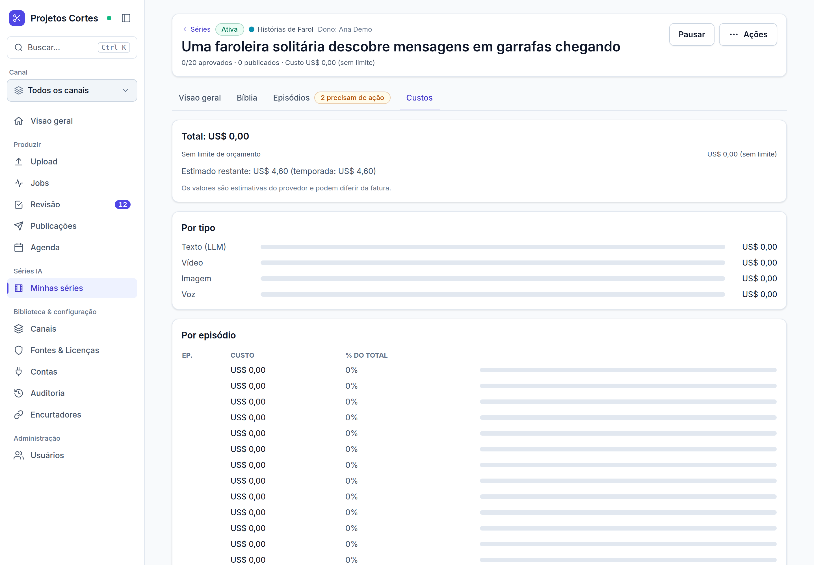
Quando o gasto chega ao orçamento da série, ela é pausada automaticamente e a tela mostra a faixa de orçamento atingido. Aumente o limite em Configuração e retome.
Há também um orçamento mensal de IA por usuário, definido pelo administrador. Se ele estourar, as séries do usuário são pausadas. Os valores zerados desta demonstração vêm dos provedores de teste.
B6 · EPISÓDIO
Clicar em um episódio abre o painel lateral. O primeiro portão: revisar o roteiro antes de gastar com imagem, vídeo e voz.
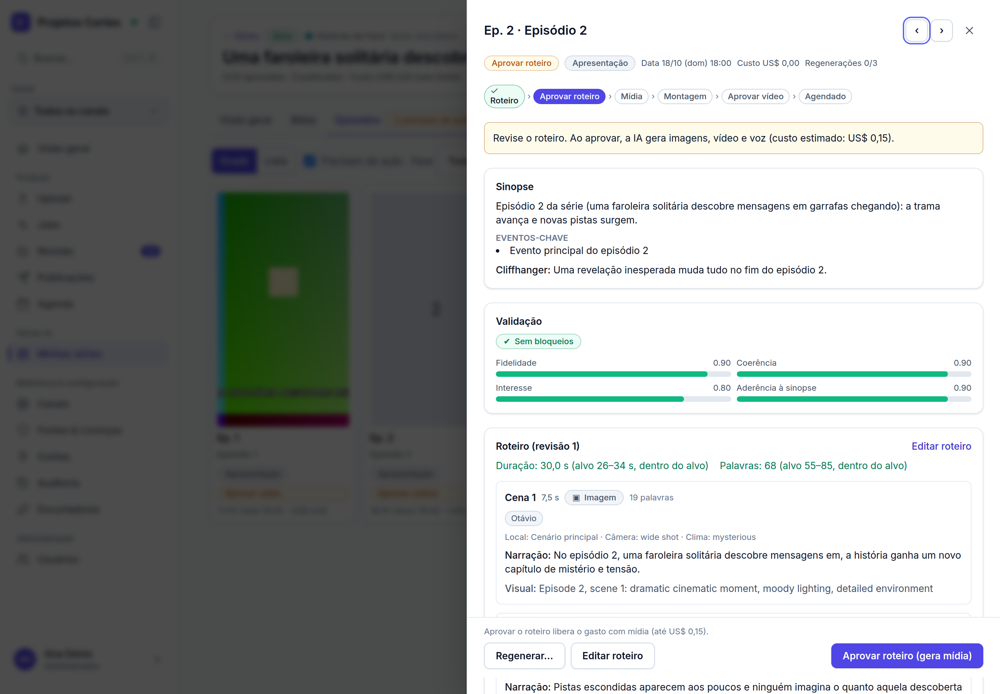
O alvo do roteiro é de 26 a 34 s e de 55 a 85 palavras. Se a validação encontrar um bloqueio (por exemplo, personagem morto em cena fora de flashback), o botão de aprovar fica indisponível: edite o roteiro ou regenere.
Editar o roteiro volta o episódio para validação e invalida a mídia já gerada. Por isso a edição fica bloqueada enquanto a mídia está sendo gerada.
B6 · EPISÓDIO
O segundo portão: assista ao episódio montado e libere (ou não) a publicação.
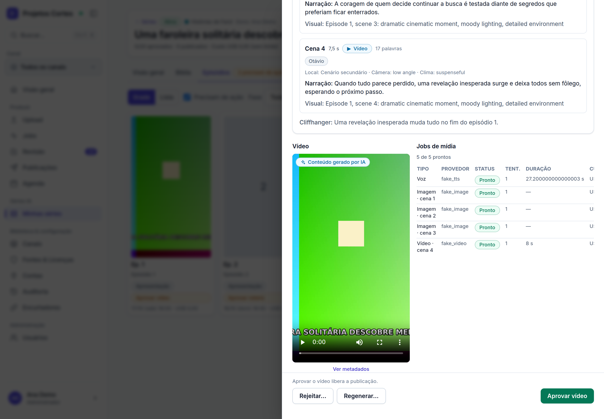
Aprovar vídeo: o episódio é agendado (ou exportado, para conta manual), passando pela trava de direitos, e os eventos de personagem entram em vigor.
Regenerar: escolha o escopo — só o roteiro, só a mídia (imagens e vídeo) ou só a narração — e escreva instruções opcionais. Cada episódio tem um limite de regenerações (padrão 3).
Rejeitar não publica o episódio; pode regenerar em seguida. Desaprovar (em episódio aprovado ou agendado) volta ao estado de revisão e cancela a publicação agendada.
Aprovado, mas sem horário livre? O episódio fica “Aprovado (sem horário)” e o sistema tenta de novo sozinho. Só é possível desaprovar enquanto o episódio seguinte não estiver aprovado e antes da publicação.
Quem administra a casa e como cada pessoa cuida da própria conta e do próprio painel.
C1 · USUÁRIOS E COTAS
Somente o administrador vê esta tela. Aqui se criam usuários e se define quanto cada um pode usar.
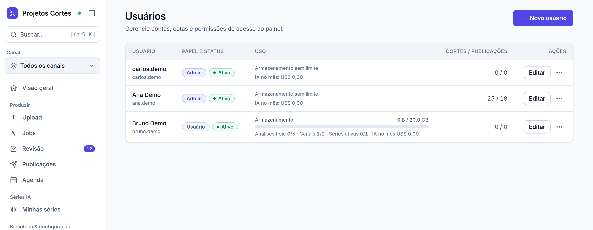
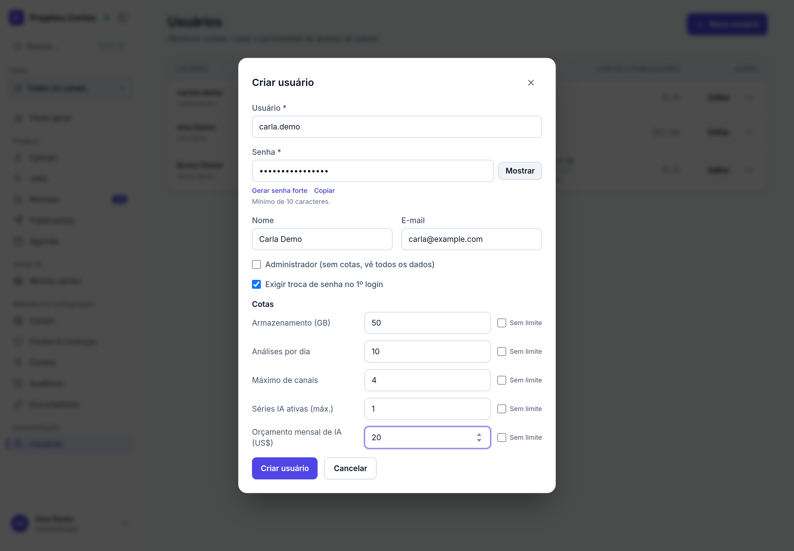
C1 · USUÁRIOS E COTAS
O que acontece quando uma cota é atingida e como funcionam os valores padrão.
| Cota | Padrão (usuário novo) | Quando excede |
|---|---|---|
| Armazenamento | 50 GB | O upload é recusado. |
| Análises por dia | 10 (dia no horário de Brasília) | Novas análises são recusadas até o dia seguinte. |
| Canais | 4 | A criação de canal é recusada. |
| Séries IA ativas | 1 | A criação de uma nova série ativa é recusada. |
| Orçamento mensal de IA | sem limite | As séries do usuário são pausadas. |
Os valores padrão valem quando o administrador não informa outro. Marcar Sem limite deixa a cota ilimitada; o administrador é sempre isento.
Redefinir senha: o administrador define uma senha provisória e o usuário precisa trocá-la no próximo acesso. Isso também encerra as sessões abertas dele.
Excluir x desativar: um usuário que já tem dados (canais, cortes, auditoria) é apenas desativado; só um usuário completamente vazio é apagado de vez. Um usuário desativado perde o acesso imediatamente.
O administrador não pode remover o próprio perfil de admin, nem desativar ou excluir a si mesmo, e o sistema nunca fica sem um admin ativo.
C2 · VER COMO
O administrador pode enxergar a plataforma como se fosse um usuário, para ajudar ou conferir um problema.
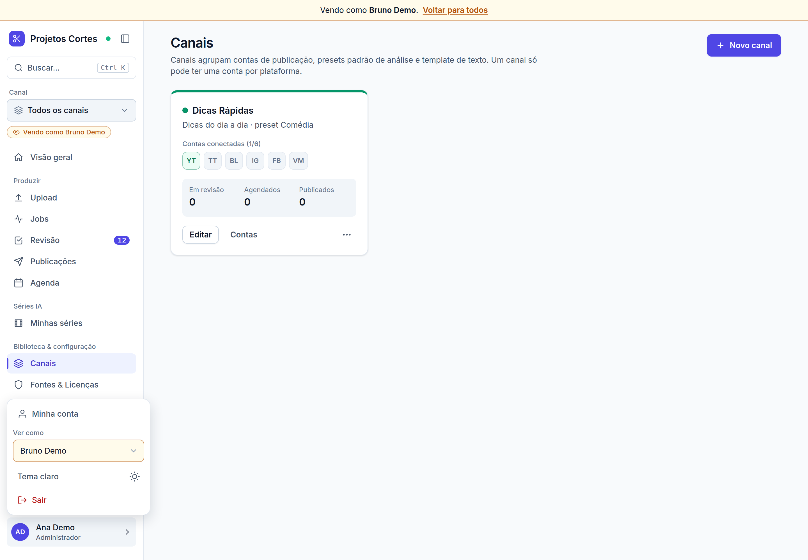
O administrador normalmente vê tudo. “Ver como” restringe a visão a um usuário. O que o administrador criar nesse modo pertence ao usuário escolhido, e a auditoria registra quem realmente fez a ação.
Usuários comuns não têm esse seletor. Dados de um usuário nunca aparecem para outro: um item de outra pessoa simplesmente “não existe” para você.
C3 · MINHA CONTA
Seus dados, o quanto você já usou das cotas e a troca de senha.
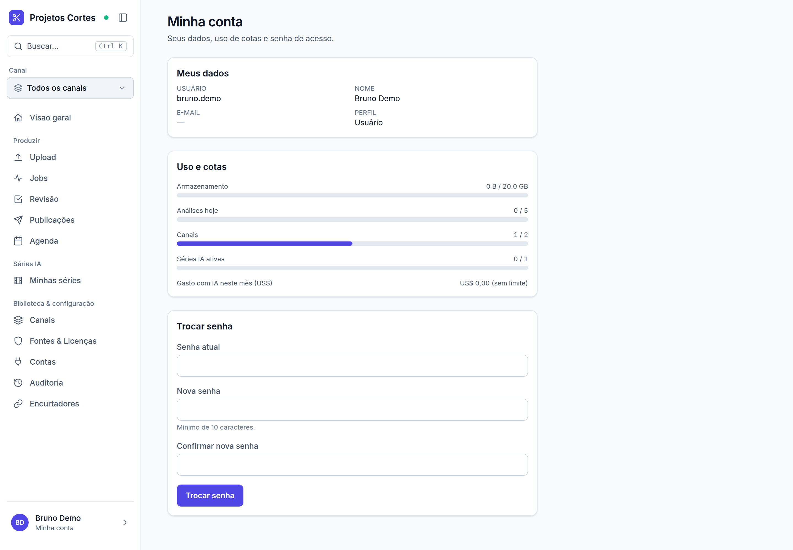
Ao trocar a senha, as outras sessões abertas são encerradas, mas você continua conectado neste navegador.
Se o administrador exigiu a troca, você só consegue usar o resto da plataforma depois de definir uma senha nova.
C4 · AUDITORIA
O histórico das ações relevantes: quem fez, quando, em qual item.
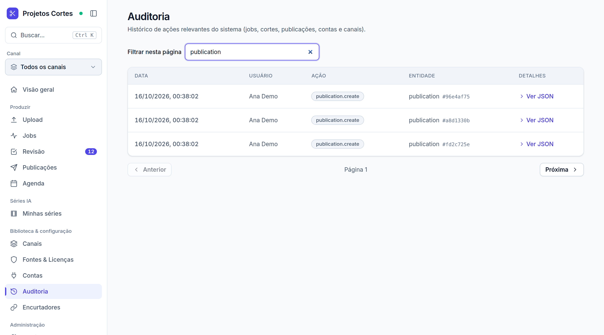
A auditoria permite reconstruir o que aconteceu. Ela registra senhas? Nunca. As chaves de integração aparecem só como “quais campos mudaram”, sem os valores.
Quando o administrador age em nome de outro usuário (“Ver como”), o registro guarda o administrador como autor e o usuário escolhido nos detalhes. Cada usuário vê apenas as próprias ações; o administrador vê todas.
C5 · ATALHOS E PERSONALIZAÇÃO
Três recursos para trabalhar mais rápido e do jeito que você preferir.
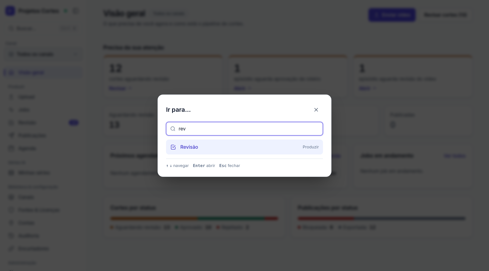
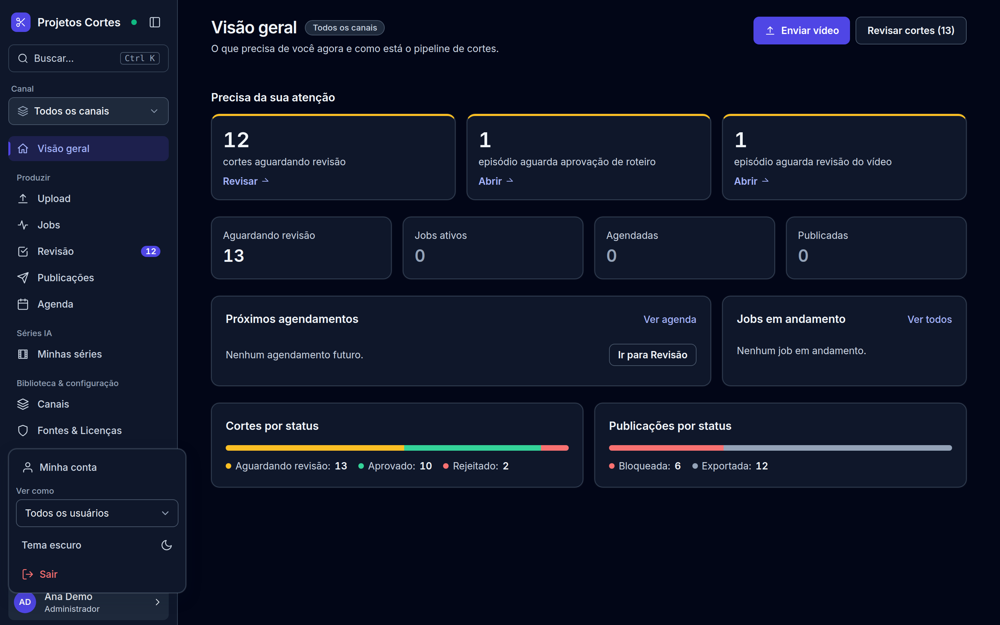
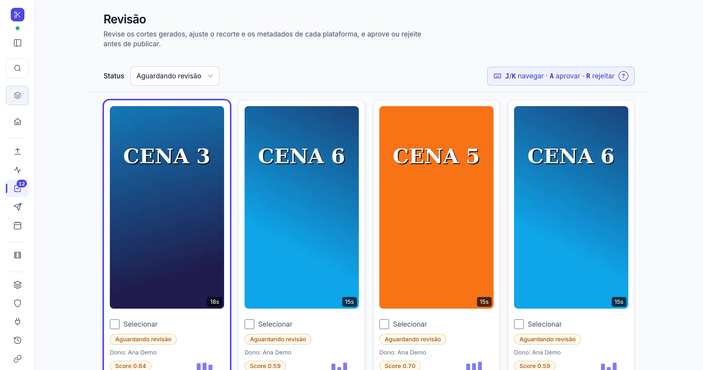
C6 · NO CELULAR
O painel se adapta a telas pequenas: o menu vira um botão no topo e as tabelas viram cartões.
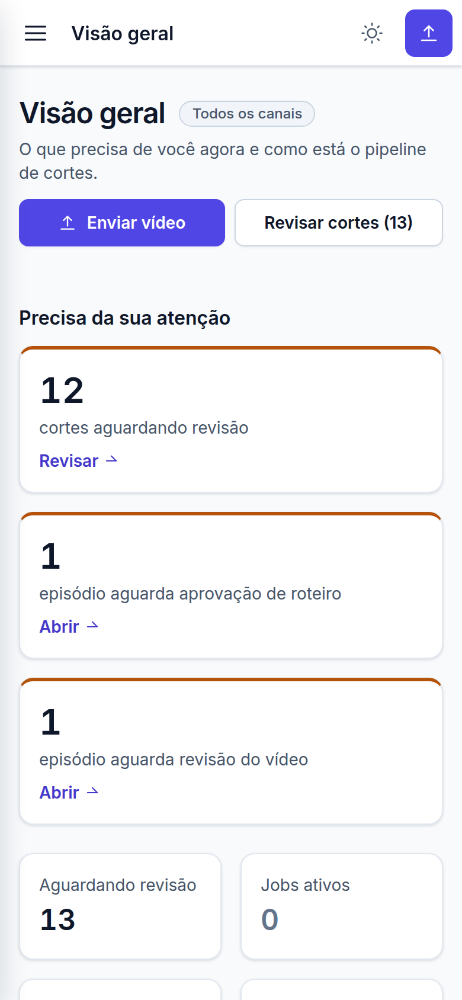
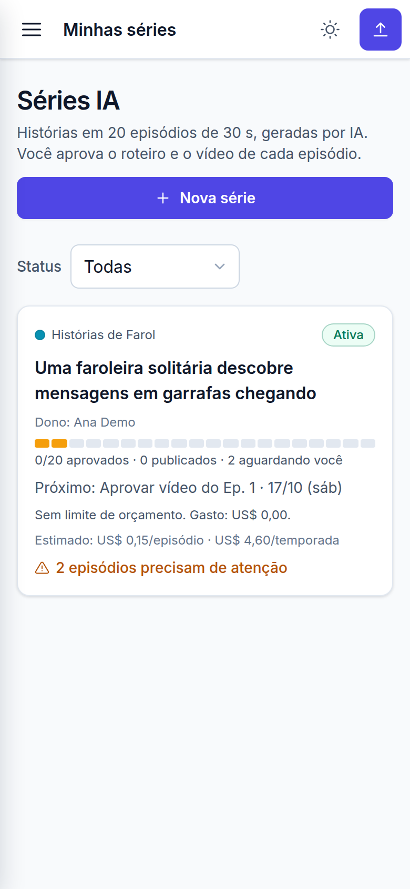
As teclas de atalho (J, K, A, R) existem só no computador. No celular use os botões Aprovar e Rejeitar de cada cartão.
O mapa das etapas, os estados, os limites, a segurança e as respostas rápidas.
D1 · OS CICLOS
Tudo na plataforma segue um destes caminhos. Em todos, a decisão final é sua e a trava de direitos está no meio.
Você envia o vídeo escolhendo a fonte (licença).
O sistema acha os melhores trechos e gera os cortes verticais.
Você aprova, rejeita ou ajusta o recorte e os textos.
A trava confere; o corte é exportado ou agendado.
Premissa, estilo e custo; a IA monta bíblia e 20 sinopses.
A IA escreve e valida; você aprova o roteiro.
A IA gera imagens, voz e vídeo e monta o episódio.
Você aprova o vídeo; o episódio é agendado ou exportado.
Confere licença, validade, plataforma e monetização.
Conta conectada: próximo horário livre. Conta manual: pacote.
Baixe o pacote e envie; a publicação automática virá depois.
Veja estados, falhas e a trilha de auditoria.
Os ciclos se encontram na trava de direitos: um corte, e também um episódio de série, só vira publicação se passar por ela. Episódios de série usam uma fonte “Gerado por IA” que a própria série cria.
D2 · ESTADOS
Os estados aparecem sempre com texto, além de cor, para ficar claro o que fazer.
“Falhou” aparece se a geração do corte der erro.
Também: Falhou e Cancelado.
Também: Falhou, Cancelada e Retirada do ar. Bloqueada = a trava impediu; Exportada = conta manual com pacote pronto.
Também: Falha no plano e Cancelada. Pausada por você, por orçamento estourado, por cota de armazenamento cheia ou por provedor indisponível — a tela diz o que fazer.
Outros: Aprovado (sem horário) — espera um horário livre; Rejeitado; Desatualizado — a bíblia ou o episódio anterior mudou e ele será reescrito; Precisa de atenção — algo falhou depois das tentativas automáticas e exige uma ação sua; Cancelado.
Os selos amarelos (Aprovar roteiro, Aprovar vídeo, Aguardando revisão) são os que esperam por você. Eles aparecem também na Visão geral e no número do menu lateral.
D3 · REGRAS E LIMITES
Os números abaixo são os padrões do sistema; o administrador pode ajustar as cotas por usuário.
| Arquivos aceitos | .mp4, .mkv, .mov e .srt |
| Upload | partes de 50 MB, até 5 novas tentativas |
| Duração dos cortes | 15 a 60 s (padrão) |
| Cortes por análise | até 6 (padrão) |
| Formato de saída | vertical 1080×1920 |
| Desfazer na Revisão | cerca de 6 s |
| Trava de direitos | 6 motivos de bloqueio (A9) |
| Conta manual | pacote zip: video.mp4 + metadata.txt |
| Atribuição | sempre incluída na descrição |
| Temporada | 20 episódios de cerca de 30 s |
| Roteiro | 3 a 6 cenas; 55 a 85 palavras |
| Premissa | 50 a 4000 caracteres, imutável |
| Antecedência | 1 ou 2 dias (padrão 2) |
| Horário padrão | 18:00 (America/Sao_Paulo) |
| Regenerações | 0 a 10 por episódio (padrão 3) |
| Séries ativas | 1 por usuário (padrão) |
| Aprovação | sequencial; roteiro e vídeo |
| Atraso | agenda anda 1 dia (ou mais) |
| Senha | mínimo de 10 caracteres | Sessão | 7 dias |
| Tentativas de login | 5 erradas em 15 min bloqueiam temporariamente | Armazenamento | 50 GB (padrão) |
| Análises por dia | 10 (padrão) | Canais | 4 (padrão) |
| Administrador | sem cotas | Orçamento de IA | opcional, por série e por mês |
Ao atingir uma cota: o upload é recusado (armazenamento), as novas análises param até o dia seguinte, a criação de canais e de séries ativas é recusada e as séries são pausadas quando o orçamento de IA acaba.
D4 · O QUE FALTA
Para evitar surpresas: o que funciona hoje e o que ainda está em desenvolvimento nesta versão.
| Recurso | Situação | O que fazer hoje |
|---|---|---|
| Envio, análise, revisão e exportação de cortes | Funciona | Use normalmente (Parte A). |
| Séries IA com provedores de teste | Funciona | Teste o fluxo completo sem custo (Parte B). |
| Séries IA com provedores reais | Depende de chaves | O administrador cadastra as chaves em Contas. A voz da ElevenLabs já tem integração; imagem e vídeo reais entram quando o provedor for escolhido. |
| Conectar contas por OAuth (YouTube, TikTok, Meta, Vimeo) | Pendente | Cadastre contas manuais. |
| Publicação automática e retirada do ar | Pendente | Baixe o pacote em Publicações e envie pelo site ou app da plataforma. |
| Agenda com publicações | Depende do OAuth | Fica vazia enquanto só há contas manuais. |
| Rótulo de IA enviado às plataformas | Depende da publicação automática | O episódio já é marcado como conteúdo sintético; ao enviar manualmente, marque o rótulo de IA na plataforma. |
| Encurtadores de link | Em breve | A área aparece no menu, mas ainda não está disponível. |
Ao publicar manualmente conteúdo de uma série IA, use o recurso de rótulo de conteúdo gerado por IA da plataforma, como você declarou na atestação ao criar a série.
D5 · SEGURANÇA E PRIVACIDADE
Como a plataforma protege o acesso, os seus dados e as chaves que você cadastra.
Você entra com usuário e senha; a sessão fica em um cookie que o navegador não deixa páginas lerem (httpOnly) e vale 7 dias. Ao trocar a senha, as outras sessões são encerradas; uma conta desativada perde o acesso na hora.
Só é guardada uma “impressão” da senha (hash argon2). Além disso, 5 tentativas erradas em 15 minutos bloqueiam temporariamente aquele usuário naquele computador.
Canais, fontes, vídeos, cortes, séries e contas pertencem a um usuário. Um item de outra pessoa se comporta como se não existisse. Apenas o administrador vê tudo, e “Ver como” fica registrado.
Chaves de API e tokens são guardados cifrados e a tela mostra só os quatro últimos caracteres. Elas nunca aparecem na auditoria nem em respostas do sistema.
O envio exige sessão válida, fonte cadastrada e respeita a cota. Os arquivos ficam em pastas separadas por usuário.
Ações relevantes (criar, aprovar, publicar, alterar contas e cotas) ficam registradas com autor e horário. Senhas, chaves e o conteúdo dos prompts de IA não são gravados.
Quando um provedor de IA está configurado, o texto necessário para gerar o resultado — premissa, roteiro, transcrição do corte ou texto da narração — é enviado a esse provedor. Os provedores de teste não enviam nada para fora.
Episódios de série são marcados como conteúdo sintético e a atestação de originalidade é obrigatória para criar a série.
D6 · DÚVIDAS FREQUENTES
D7 · GLOSSÁRIO